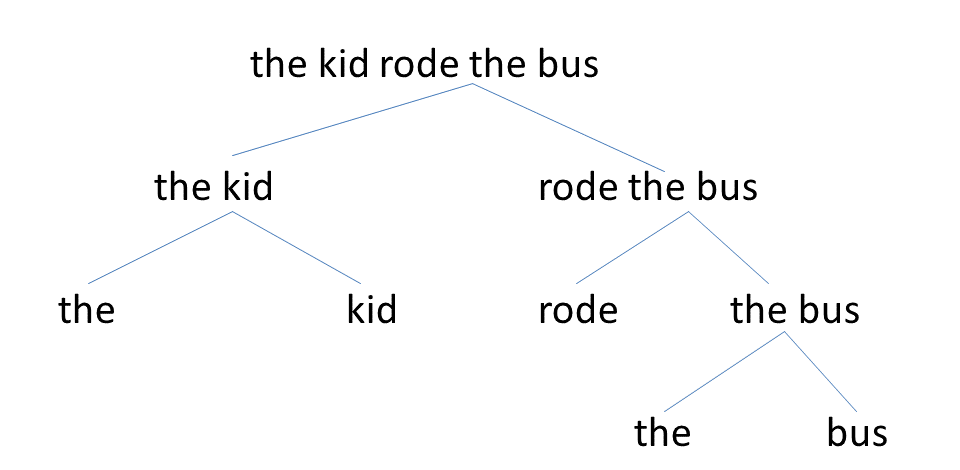

We have seen that words can go together to form constituents.
Words don't just go together in a random, structure-less lump. Instead, when you combine words,
different words may be playing different roles in the constituent. There are three types of roles that words
in a constituent can play: head, complement, or adjunct. (Some theories of syntax
include more roles than this—for example, X-bar theory and Minimalism include "specifiers" as well. However,
the roles of head, complement, and adjunct are roles that exist in any theory of syntax, whereas other roles like
"specifier" are concepts that only exist in certain theories and not in others.)
Heads
The head of a constituent is the word that determines that constituent's functional category.
For example, "ball" is a Noun Phrase, and "big stupid red ball" is also a noun phrase; thus, "ball" is the head of
"big stupid red ball". But the constituent "kicked the big stupid red ball", this constituent is now a verb phrase,
which means the head of that constituent is "kicked".
Complements
One of the basic ways of forming a constituent is to combine a head with a complement. A complement
(also called an object) "completes" a head; it's a word that a head needs to have, in order to become a
complete phrase.
For example, the verb put needs to have a thing that is put, and a place where the thing
is put; it needs two complements. If the verb has both complements (sentence #1 below), it can make a grammatical
sentence. If it's missing either complement (sentences #2 and #3), or both complements (sentence #4), it will be
ungrammatical.
Samy put the bookon the table.
*Samy put the book.
*Samy put on the table.
*Samy put.
Each head has a specific number of slots for complements. For example, 吃 ("eat") can take one complement;
if you try to give it two complements, you'll get an ungrammatical sentence:
晓明吃了苹果。 ("Xiaoming ate an apple")
*晓明吃了苹果我。 ("Xiaoming ate an apple me")
On the other hand, 喂 "feed" (like put) is allowed to have two complements (a noun and a
verb phrase):
晓明喂我吃苹果。 ("Xiaoming fed me apples", literally "Xiaoming fed me eat apples")
You may notice a challenge to what I've said so far. So far I said that a head has a specific number
of available slots for complements and it cannot have too many or too few complements. In reality, though, there are
some heads that are flexible (e.g., in English, I can say "I read a book"
or just "I read"). These might be 'optional' complement slots, or these two versions of "read" might be
slightly different words with slightly different rules. Different theories have different ways of handling this issue.
Adjuncts
The last type of role is that of an adjunct. An adjunct, like a complement, is something
you combine with a head. The difference is that complements are necessary, and each head has a limited (and fixed)
number of slots for complements; we saw examples of that above. Adjuncts, on the other hand, are not necessary,
neither are they limited. They just give extra information. In the sentence below, yesterday is an adjunct,
because I could take it away without making the sentence ungrammatical (unlike stuff like "on the table" from the
previous examples):
Prakash went to the store yesterday.
Prakash went to the store.
Likewise, I can add as many adjuncts as I want in the sentence; it might start to sound weird and
hard to remember, but it will never become ungrammatical. This is different from the examples of complements above,
where adding an extra complement would make the sentence ungrammatical. With adjuncts, we can just keep adding and
adding:
Prakash went to the store [yesterday] [after class] [with his friend] [because he needed some vegetables].
Ultimately, all constituents (and all sentences) are made by combining heads, complements, and adjuncts one at
a time. Think of a sentence like The kid rode the bus. We can put this together by combining two constituents
at a time, over and over again:
(In phrases like "the bus", the is generally considered to be the head, and bus
the complement, and thus we call these Determiner Phrases [the is a determiner] rather than Noun Phrases.
The reasons for that are beyond the scope of this subject, but you'll learn about it if you ever take a syntax class.
For a phrase like rode the bus, you can use the above concepts to figure out on your own what's the head
and what's the complement.)
Linguists often illustrate these with tree structures like the one below; the picture below shows
the same information as what I just showed in the steps above.

These trees are also useful for identifying constituents. A constituent is any chunk that you see
together in the tree, without any other stuff attached to it. For example, "rode the bus" appears in the tree, and you
can do constituency tests to prove that it's a constituent (try this yourself). On the other hand, "kid rode the"
doesn't appear on its own in the tree, and you can also do constituency tests and see that it's not a constituent
(try this yourself).
You won't need to draw trees in this class, but you may find them helpful.
Continue to the activities below to practice these concepts.
Choose any one of the ambiguous sentences from the previous activity. Focus on just the ambiguous
part (you don't need to analyze the entire sentence). For each interpretation, explain how the words went
together (and in what order), and identify the heads, complements, and adjuncts. You may do this with a tree
or with a step-by-step explanation.
Reflection time! This module just focused on some basic concepts and we have not yet gotten to analyzing
specific features of English, Chinese, or other languages; that will be done in the advanced syntax modules,
but the basic concepts from this module will help you with those.
First, though, write a reflection about this module (following the same guidelines as the reflection portions of
the previous modules).
When you finish this activity, you are done with the module (assuming all your work on this and the
previous tasks has been satisfactory). You can return to the module homepage to review this
module, or return to the class homepage to select a different module or assignment to do now.